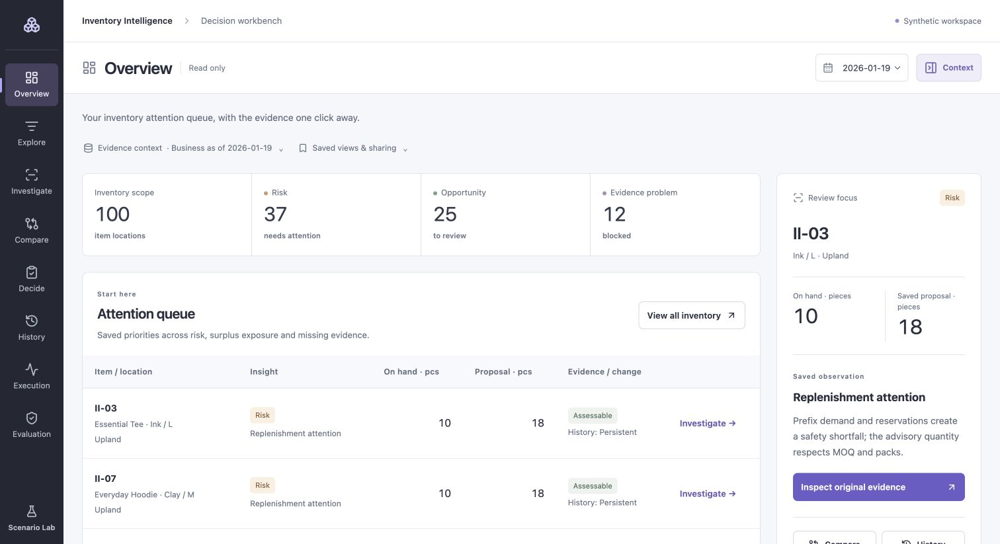

01 / BACKEND · DATA SYSTEMS · DECISION INTELLIGENCE
Inventory Intelligence
An inventory decision workbench that checks whether stock can be trusted before recommending what to replenish. Connects source evidence, planning, supplier feasibility and decision evaluation.
50 apparel SKUs · 2 locations · 3 saved cutoffs
Read-only synthetic demo. Advisory quantities; no real orders or commercial savings claim.Engineering notes
- Aligned ledger and snapshot checks return
not_assessablewhen evidence is incomplete or contradictory. - Preserves exact quantities, source versions, supplier constraints and donor-safe transfer history.
- Retained local acceptance: 368/368 PostgreSQL checks; later bounded audit: 126/126 checks. These are saved engineering results, not a production SLA.
- Architecture & evidence ↗

